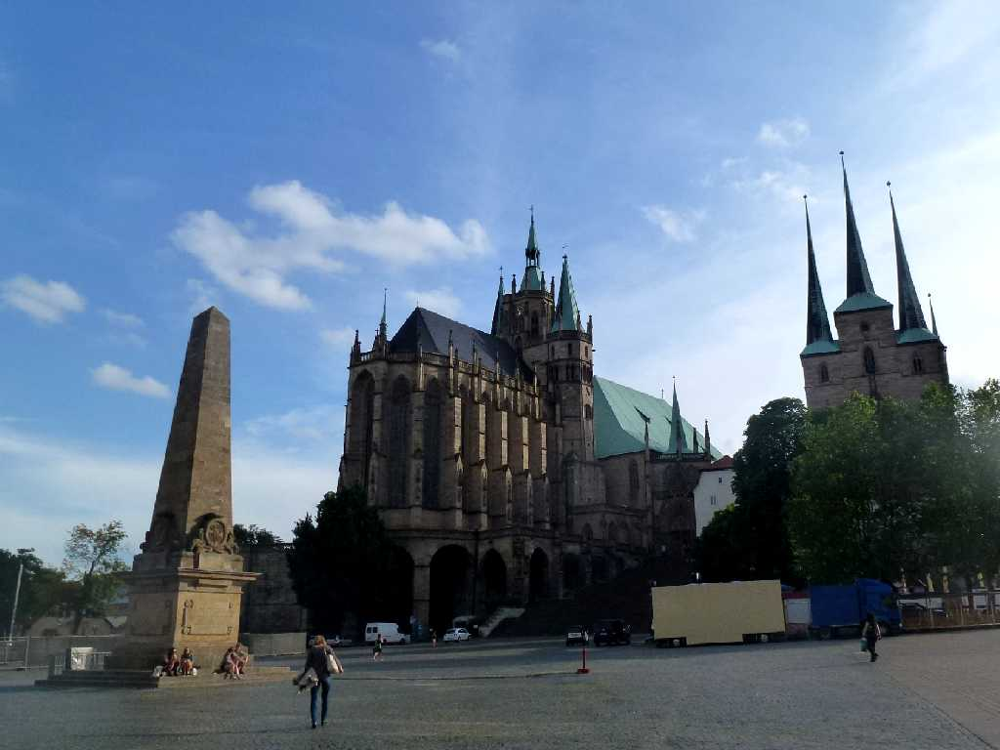
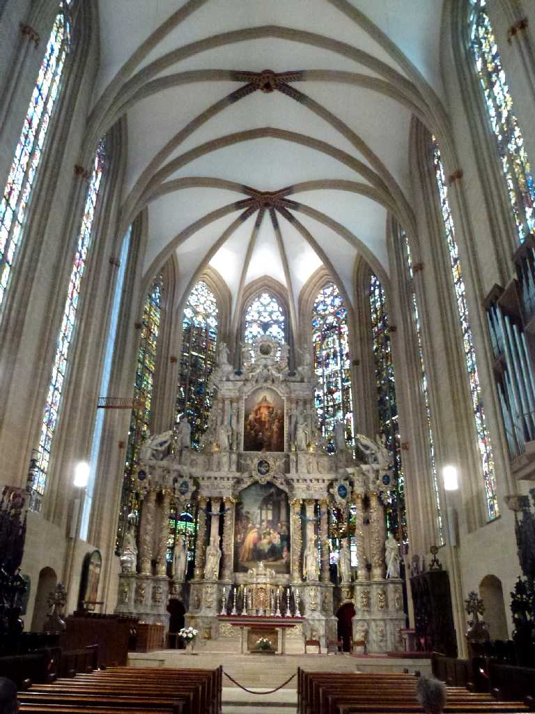
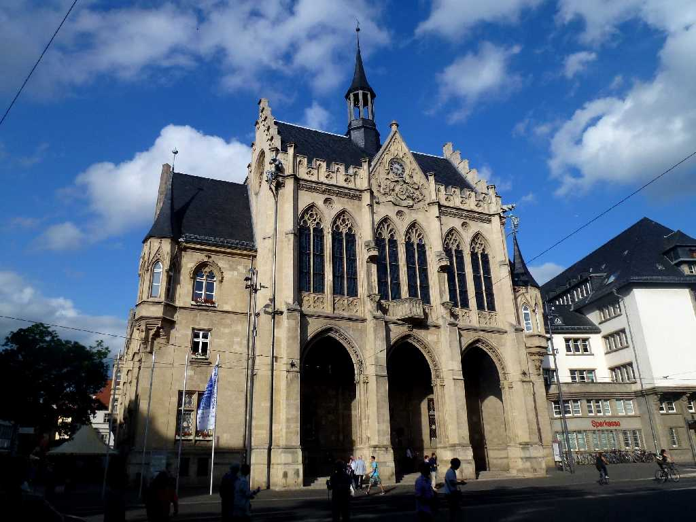
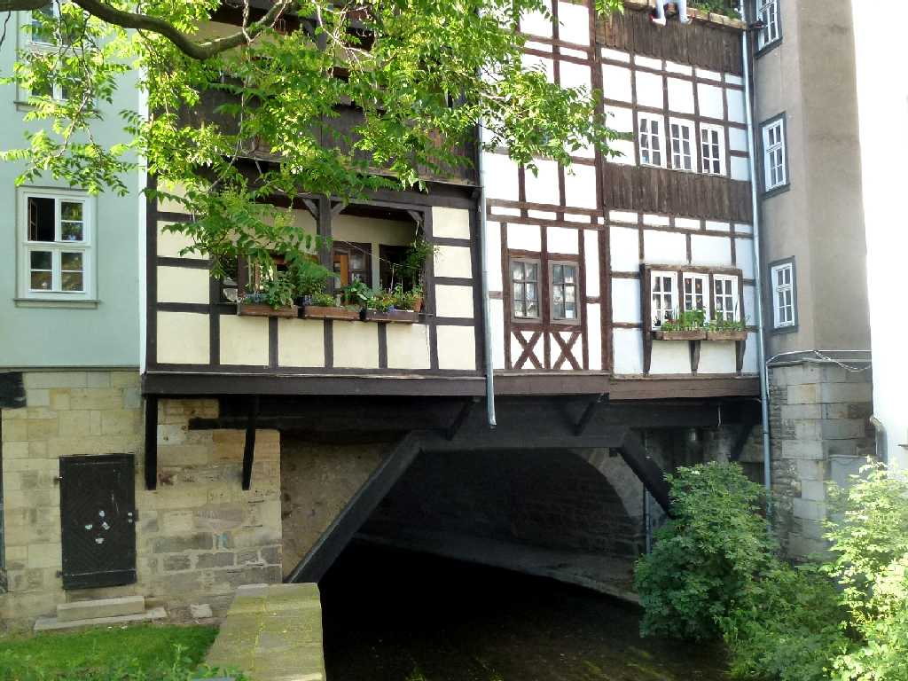
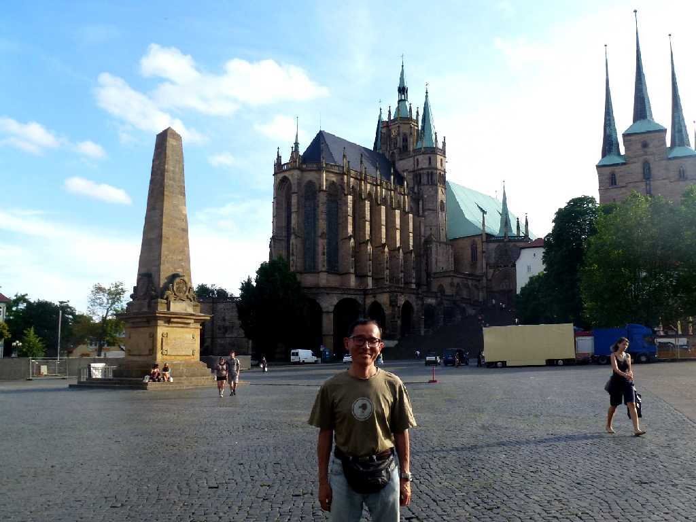

Marien Dom Domplatz Erfurt
７４２年に創建され１３４９年にゴシック様式で再建されたマリエン大聖堂

Marien Dom

Rathaus
魚市場があったフィッシュマルクト広場にあるルネサンスゴシック様式の市庁舎

Krämerbrücke
クレーマー橋はフィレンツェのヴェッキヨ橋とバースのパルテニー橋と並ぶヨーロッパ三大店舗橋の一つ

June 11 2014 Marien Dom Domplatz